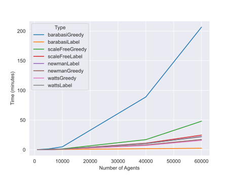

Data Visualization Using Seaborn
After all data has been generated, a graph is usually created to help visualize the relationship and draw some conclusions
about the dataset. This document will show how to do this using seaborn package.
The use case described here is from the paper Modelling the Joint Effect of Social Determinants and Peers on Obesity Among Canadian Adults which is described in Customizing Models. The model used in the paper will be referred as obesity model.
Creating graphs
Using seaborn to graph will require an object of class pandas.DataFrame.
A csv file that has data collected from running the obesity model with different values of p, 20 replications each, is used here. The model was also run with different types of networks, small world and scale-free, which can be indicated from the Type column. The first five rows of the file:
Type |
p |
Run 1 |
Run 2 |
Run 3 |
Run 4 |
Run 5 |
Run 6 |
Run 7 |
Run 8 |
Run 9 |
Run 10 |
Run 11 |
Run 12 |
Run 13 |
Run 14 |
Run 15 |
Run 16 |
Run 17 |
Run 18 |
Run 19 |
Run 20 |
Average |
Std.dev |
small world network |
0 |
0.944109271853976 |
0.943272510462144 |
0.945100833063561 |
0.946047559547820 |
0.944957618976085 |
0.941960336475511 |
0.946285214555486 |
0.945970040931523 |
0.945857081343874 |
0.945126685159369 |
0.945370405974358 |
0.944814020543980 |
0.942529115582702 |
0.942818460147247 |
0.940631718025881 |
0.947534251175898 |
0.946581619284009 |
0.942941265269773 |
0.946720968239520 |
0.937029575173919 |
0.944282927589332 |
0.002481042387706 |
small world network |
0.1 |
0.946973076121970 |
0.946617599287052 |
0.942456260775825 |
0.944635084959176 |
0.942467386558992 |
0.945229129421983 |
0.947359922670772 |
0.945104279996451 |
0.946341113241199 |
0.944899313439946 |
0.947696967469431 |
0.945208391937545 |
0.947710293072920 |
0.942961313682385 |
0.942053468596662 |
0.943957862165018 |
0.945498722295999 |
0.943175727314859 |
0.943220964080330 |
0.945398945843107 |
0.944948291146581 |
0.001812287403504 |
small world network |
0.2 |
0.945395483259351 |
0.940678119300061 |
0.944889970046319 |
0.941832325847629 |
0.943703455315310 |
0.942125149390305 |
0.946008673142990 |
0.943961570081988 |
0.948194000651583 |
0.944752010201218 |
0.945018555034966 |
0.947327981458632 |
0.945978748922288 |
0.946982362587585 |
0.945884821791658 |
0.945575714718527 |
0.940081369257270 |
0.944164020876378 |
0.941742280441609 |
0.942931342843664 |
0.944361397758467 |
0.002227053037776 |
small world network |
0.4 |
0.941793814059850 |
0.936209913958135 |
0.940822380533337 |
0.942149056392003 |
0.938623872033771 |
0.938656120872794 |
0.939928795691587 |
0.941674917329126 |
0.940557272976996 |
0.939539946129317 |
0.942636740319198 |
0.940810593683853 |
0.939730963649967 |
0.937378945866146 |
0.938744884469157 |
0.935088346591858 |
0.939827325252386 |
0.940701261986813 |
0.940674633568388 |
0.939726271017177 |
0.939763802819093 |
0.001920758023106 |
The complete dataset can be found here: obesity_serial.csv
The file can be loaded to a panda dataframe using pandas.pd.read_csv():
import pandas as pd
runs_data = pd.read_csv("obesity_serial.csv")
The graph can be plotted and shown using both seaborn and matplotlib. In this case, line plot is used:
import pandas as pd
import matplotlib.pyplot as plt
# Set the background theme for the graph
sns.set_style("darkgrid")
# Function to use line plot
sns.lineplot(data=runs, x="p", y="Average", hue="Type")
# To show the graph
plt.show()
The result graph is displayed below:

Comparing runtimes
Graphs can be used to compare the runtime across multiple categories.
In order to explore how different types of networks influence the runtime of the model for the parallel version, data was collected by running the obesity model with different types of networks and increasing number of agents. The data are then organized into a csv file. The first five rows are displayed below:
Number of Agents |
Type |
Time (minutes) |
1000 |
barabasiGreedy |
0.191486667 |
5000 |
barabasiGreedy |
1.3587 |
10000 |
barabasiGreedy |
4.947505556 |
40000 |
barabasiGreedy |
88.92053333 |
The complete csv file can be found here: obesity_parallel_gpu.csv
In order to use the above file for graphing, a pandas dataframe should be created and then seaborn and matplotlib
to graph it. Parameter hue can be set as Type to group the data. Parameter
import seaborn as sns
import pandas as pd
import matplotlib.pyplot as plt
runs = pd.read_csv("obesity_parallel_gpu.csv")
sns.set_style("darkgrid")
sns.lineplot(data=runs, x="Number of Agents", y="Time (minutes)", hue="Type")
plt.show()
The resulted graph is displayed below:
There are different ways to organize the dataset to help with data Visualization. More details can be found on seaborn package page